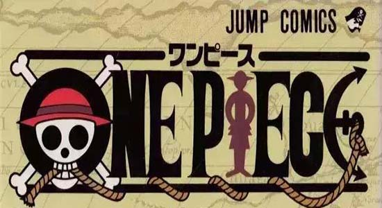
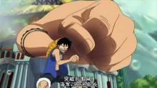
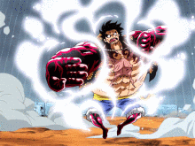
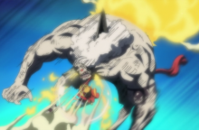
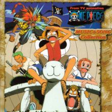
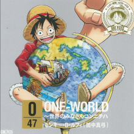

- 目录
- 1.角色背景
- 角色原型
- 名字来源
- 2.角色形象
- 身份背景
- 衣着样貌
- 3.角色能力
- 果实能力
- 二档
- 三档
- 四档
- 其它能力
- 4.角色歌曲

尾田荣一郎根据日本漫画《龙珠》[4]尾田荣一郎．ONE PIECE 尾田荣一郎画集 COLOR WALK 1：集英社，2001而构思出来路飞这一角色 。尾田在连载《航海王》之前，还推出过短篇海贼漫画《冒险的黎明》，该漫画的主角也叫路飞，是《航海王》中路飞的雏形。
作者尾田荣一郎在《航海王》连载10周年的纪念情报志《ONE PARA》[5]《航海王》第801话 开幕宣言.腾讯动漫中表示，路飞（Luffy）这名字源自英语“Luff”，意即“逆风航行”，这是他想过最适合船长使用的名字。此外，他也指出路飞生下来就是运势非凡的人；只有实力和运气兼备的人，才能成就伟大功业。
路飞的姓氏蒙奇（Monkey），和英文里的“猴子”相同。而路飞的代表动物也是猴子。
19岁的青年海贼，海军英雄蒙奇·D·卡普的孙子，革命军首领蒙奇·D·龙[6]《航海王》第598话 两年后.腾讯动漫的儿子，波特卡斯·D·艾斯、萨博的义弟，集结香波地群岛的十一超新星之一。悬赏金15亿贝里，被称作“草帽小子”。小时候误食了橡胶果实，所以自己获得如橡胶般自由伸缩的能力。梦想是找到传说中的One Piece，成为海贼王，他是在香克斯的启蒙下萌生这个梦想的。口头禅是“我是要成为海贼王的男人”。尾田提到草帽一伙如果是个大家族，那路飞就是家中的四男。
一头黑色的短发，看上去有些乱，左眼下有曾经自己为了表现勇敢而自己划下的伤疤。平时身穿红色的小坎肩，蓝色的半腿牛仔裤。脚穿草鞋。头上一直戴着曾经红发寄托给路飞的草帽。两年后，胸口多出了因赤犬的攻击而产生的“X”型伤疤，而在穿着上，他在腰上加了一条黄色腰带。脸上永远挂着自信的笑容。
路飞是超人系“橡胶果实”能力者，全身拥有橡胶体质，在战斗中路飞利用发挥了这一体质，并在不断的战斗中升级自己的招式
果实特点：能够将身体的任何部位依自己的意思伸长和反弹，使普通的打击具有更强的威力，身体不会因为反作用力而受到伤害。变成橡胶的身躯具有绝佳的弹性与延展性。能够伸缩的距离跟能力者本身的实力成正比。大多数的物理攻击（除了霸气）在打中橡胶人身体时会弹回去或是完全无效，小型的子弹或是普通的炮弹射中身体也能弹回去。此外，橡胶的身体不能导电，因此雷电的招式对他无效。（克制响雷果实）
果实弱点：斩击、砍击、高热以及低温的攻击。
“二档”是“橡胶人”独有的招式，发动后，路飞的皮肤会变得通红并冒出蒸气，如同使用兴奋剂一般。路飞以脚做为泵打气（两年后能以手做为泵打气），借此加速血液的流动，强化身体的强度。
特点：因为果实的特殊性，使路飞可以承受“二档”带来的极高的血压。经“二档”强化后的身体能够使出极快速的动作，能使敌人在不知不觉中受到攻击。极快的速度加上强化后的力量，这使得“二档”的攻击比起常态时要强力许多。

“三档”是“橡胶人”独有的招式，发动时，路飞会咬住大拇指，将空气吹入骨头的空隙中，操纵其名为“骨气球”的战斗招式，使身体的一部分巨大化。
特点：拥有破坏力媲美巨人族[7]《海贼王》TV强者世界前篇的力量，基本招式经过“三档”的强化能够变成极为强力的招式。

“四档”是“橡胶人”独有的招式。发动时，路飞先使用武装色霸气[8]《航海王》第114话 前进的方向.腾讯动漫武装手臂，然后咬住手臂并将空气吹入手臂中，操纵其名为“肌肉气球”的战斗招式，将空气压缩进体内拥有弹力和巨体.
特点：“四档”是路飞在修行的两年间跟那些大得像怪物一样的猛兽们战斗，为了降服他们而开发出的新招式。此状态下的路飞具备了强壮的巨体和充足的弹力，甚至能用弹力在空中飞行。但进入“四档”后不能正常地站立，只能利用橡胶的弹力弹起来。实力全面提升，比二档速度更快，比三档力量和防御更强。”

为了纪念哥哥艾斯，模仿艾斯的招式——火拳。为加强版的武装色硬化橡胶子弹的火焰版。

歌曲名：Wanted（通缉令)
所属专辑：《ONE PIECE MUSIC&SONG Collection 1》
作词：藤林圣子
作曲：田中公平
编曲：岩崎文纪
演唱：田中真弓（蒙奇·D·路飞）

歌曲：ONE-WORLD～世界のみなさんコンニチハ
所属专辑：《航海王47首府道县角色歌》
作词：藤林圣子
作曲：田中公平
编曲：中村博
演唱：田中真弓（蒙奇·D·路飞）